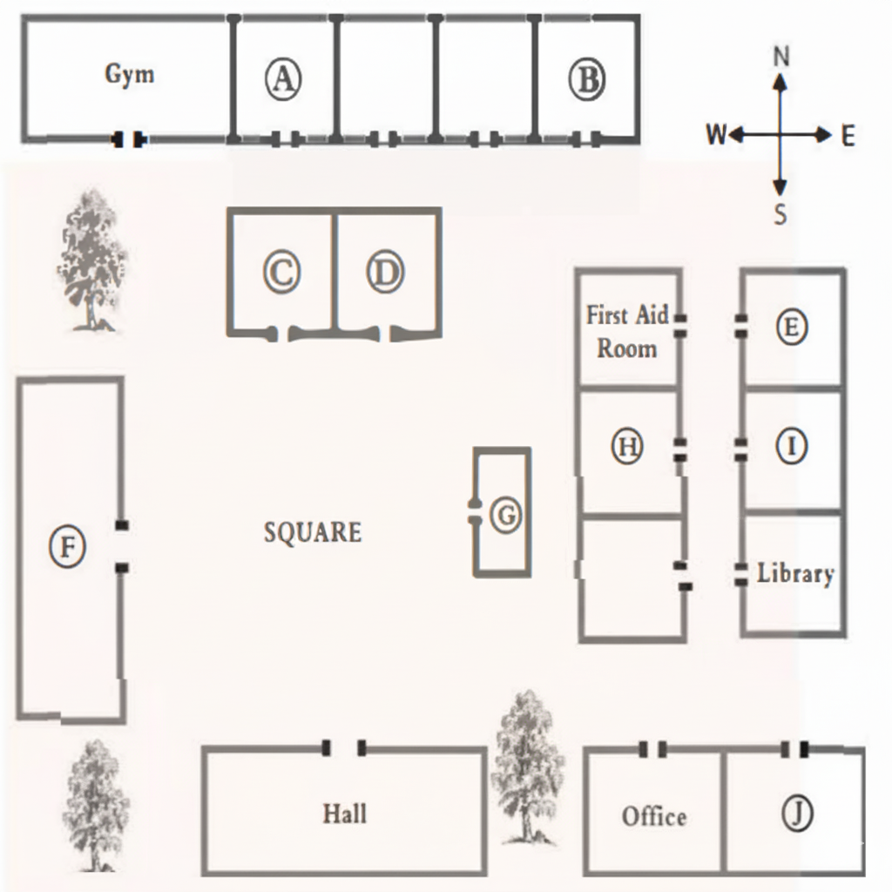

Part 1
Questions 1-10
Complete the form below.
Write ONE WORD AND/OR A NUMBER for each answer.
| Newspaper Photo Reprint Request Form | |
Example Newspaper date: March 10th | |
Newspaper pages: Newspaper story: Photo subject: Photo use: Image type: Size: Quantity: Price: Processing option: Payment type: Delivery method: Reading frequency: | the 1 Page Student Athlete of the 2 James 3 4 5 Regular Three 6 $ 7 8 9 every 10 |
Part 2
Questions 11-15
Choose the correct letter, A,B or C.
Information day: Training courses for workers in the hospitality industry
Questions 16-20
Label the plan below.
Write the correct letter, A-J, next to question 16-20
College plan

Workshops
16. Restaurant Service
17. Kitchen Hands
18. Porters, Cleaners, Dishwasher
19. Receptionist workshop
20. Interview Skills
Part 3
Questions 21-26
Choose the correct letter, A,B or C.
Battery-powered motorbikes
Questions 27-30
Which option is expressed by the students about each of the following aspects of the project?
Choose FOUR answers from the box and write the correct letter, A-F, next to question 27-30.
Options
| A. | It took longer than expected. | |
| B. | It was unexpectedly enjoyable. | |
| C. | A member of staff was surprisingly helpful. | |
| D. | They benefited from a relative's help. | |
| E. | A member of staff identified one serious problem. | |
| F. | A different student made a careless mistake. |
Aspects of the projects
27. writing the report
28. Keeping a log book
29. doing the sketches
30. finding sponsors
Part 4
Questions 31-40
Complete the notes below.
Write ONE WORD ONLY for each answer.
| The development of the telescope |
Roger Bacon (1200s)
Lipperhey
Galileo
The venetian government hoped to use this instrument for the 34 |
Galileo's astronomical discoveries
Further development
|